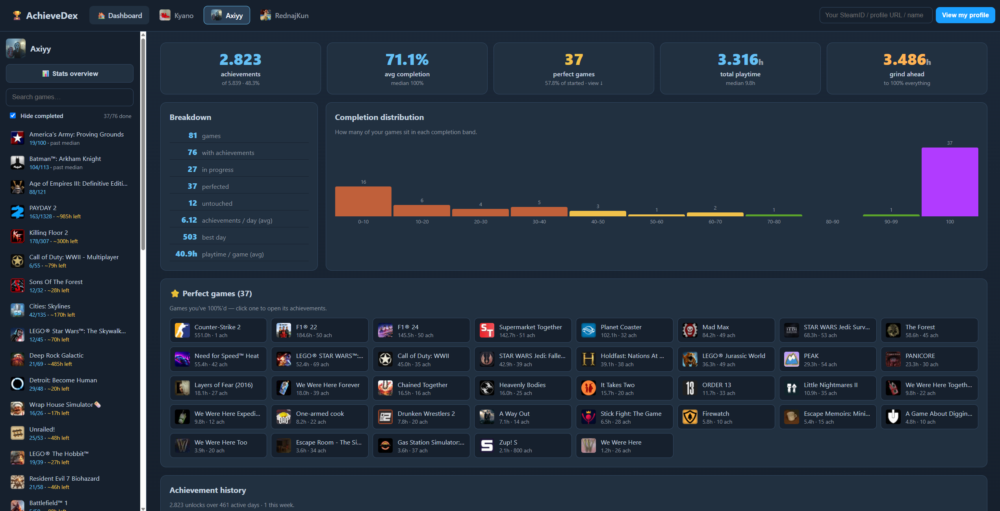

Mijn Projecten
Een selectie van mijn werk en schoolprojecten

AchieveDex
Dashboard om Steam-achievements bij te houden per profiel: voortgang, perfecte games en completion-statistieken. Live op sam.kyanodm.be.

Gym Progress App
Track je fitness vooruitgang met maandelijkse foto's en video's. Beschikbaar als web- en mobiele versie.

3D Portfolio
Een interactieve portfolio website met 3D elementen, gemaakt voor mijn broer.

Lotus Project
Website project gemaakt tijdens mijn studentenjob bij Lotus.

Burrow
Burrow, een mobiele app voor communities. Dit is een prototype en is gemaakt in 3 weken.